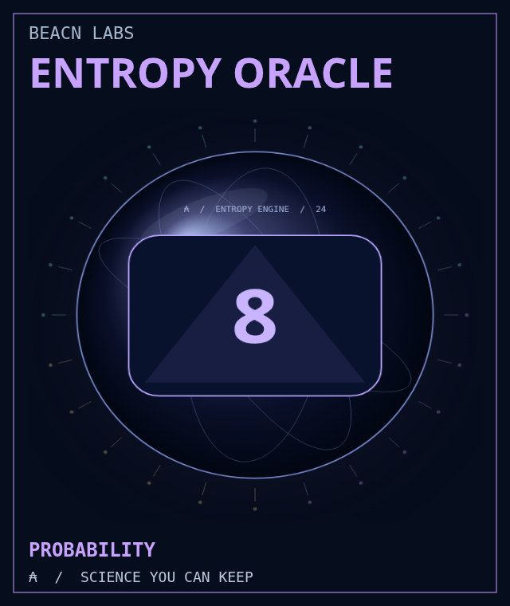
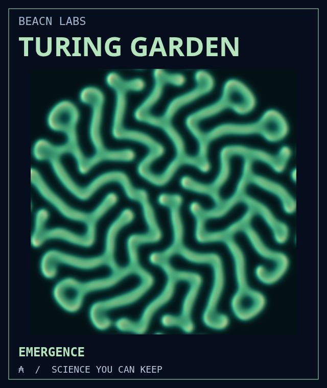
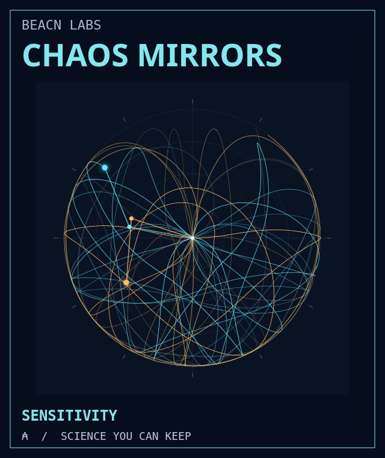
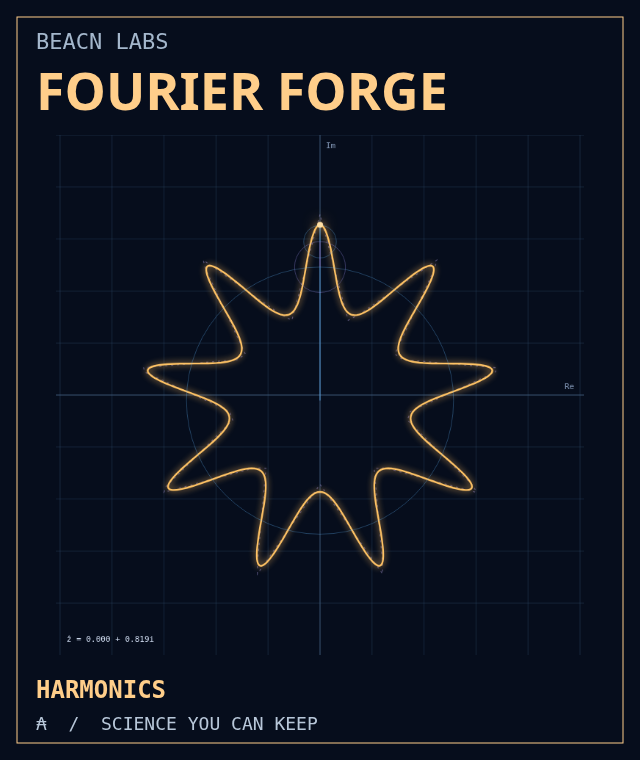
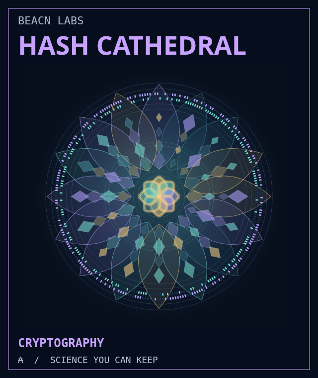

01 / PROBABILITYEntropy OracleAsk a crypto-flavored magic 8-ball. Compare independent draws, fresh answers and shuffled decks, then watch their entropy and histograms.Ask the oracleReview mint files
02 / EMERGENCETuring GardenPlant a disturbance in 36,864 cells. Change the chemistry, grow living patterns and keep an exact state file of your own garden.Grow a worldReview mint files
03 / CHAOSChaos MirrorsGive two pendulums almost identical starts. A tiny difference becomes two futures. Track separation, energy error and the drawing they leave.Change the startReview mint files
04 / HARMONICSFourier ForgeDraw a shape and rebuild it from rotating circles. Add harmonics, measure the error and listen to a waveform derived from your drawing.Draw a frequencyReview mint files
05 / CRYPTOGRAPHYHash CathedralTurn a message into geometric art. Flip one bit and inspect the avalanche. Build a Merkle proof, then tamper with it and test the result.Change one bitReview mint files